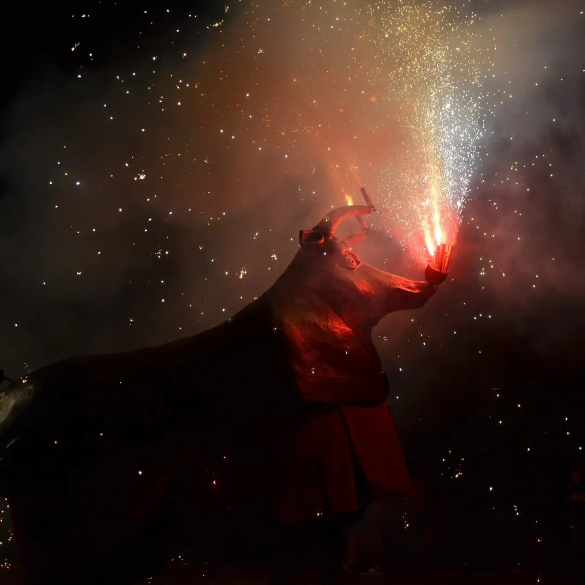
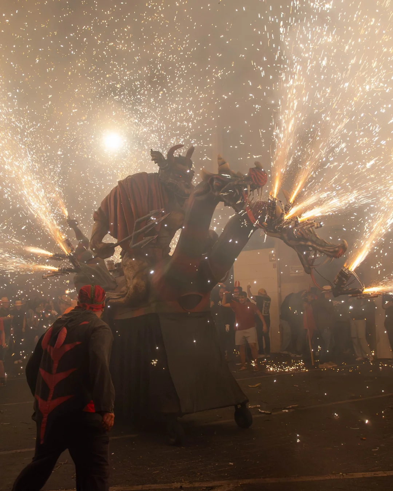
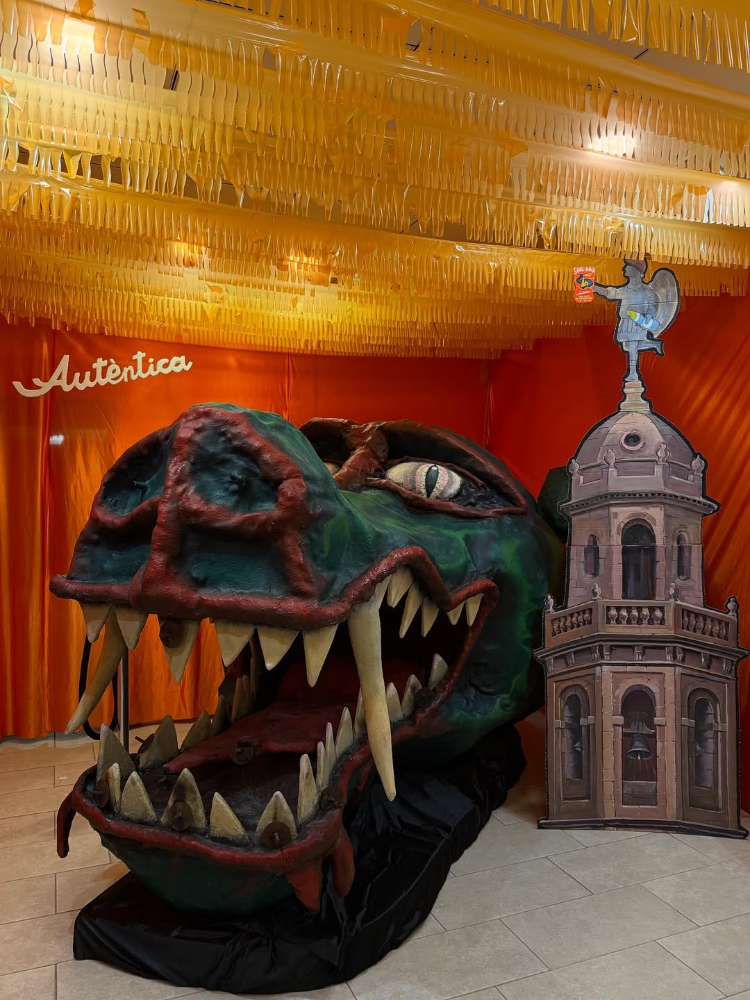
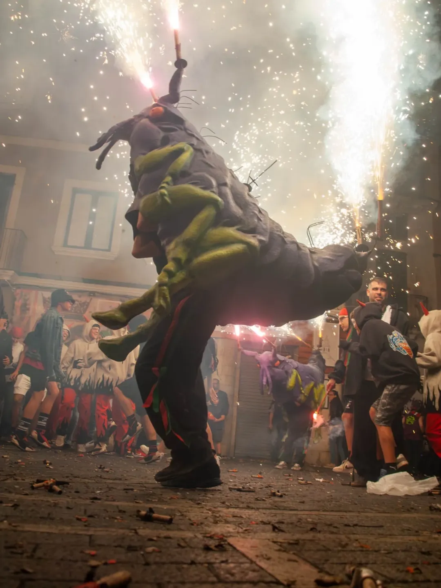
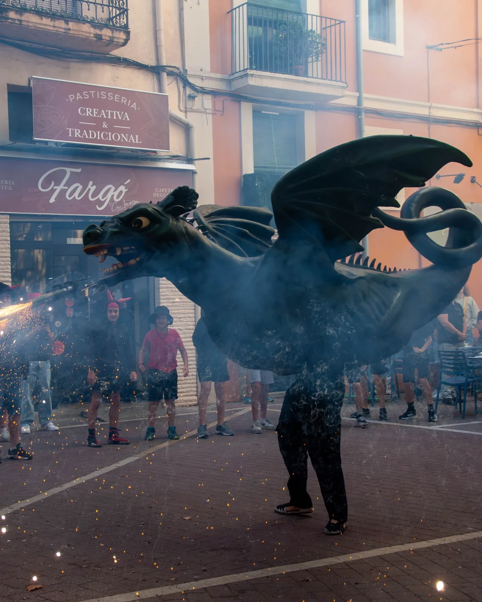
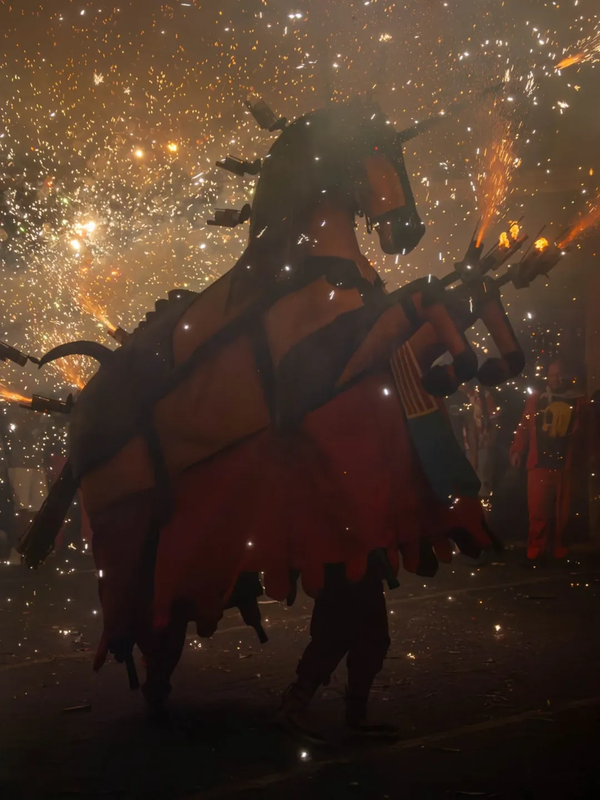
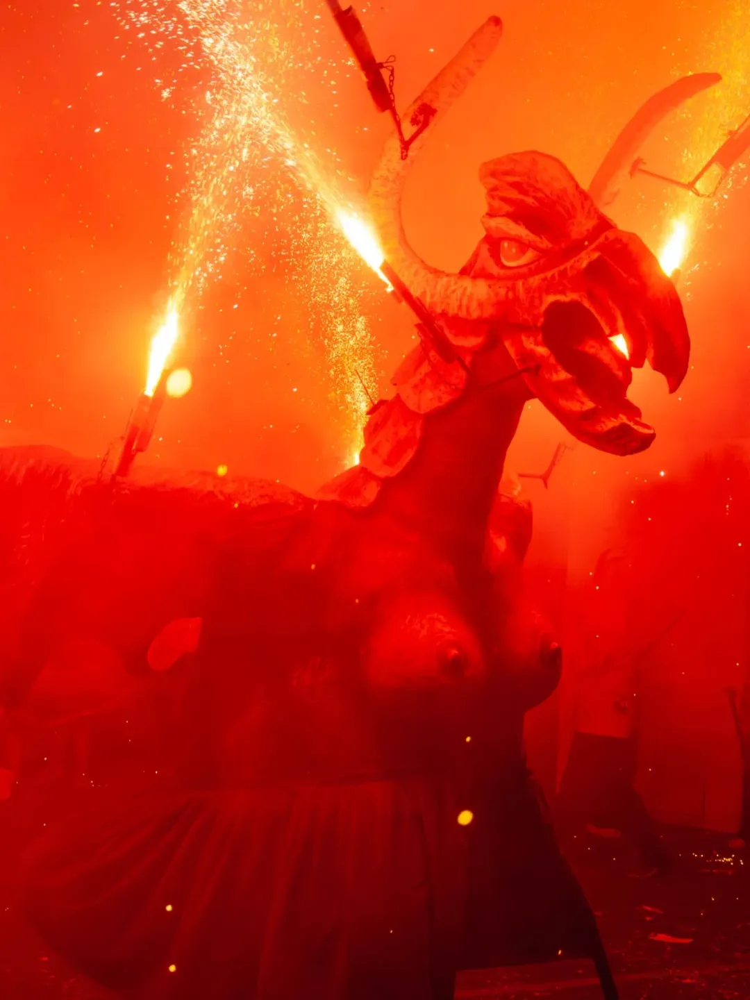
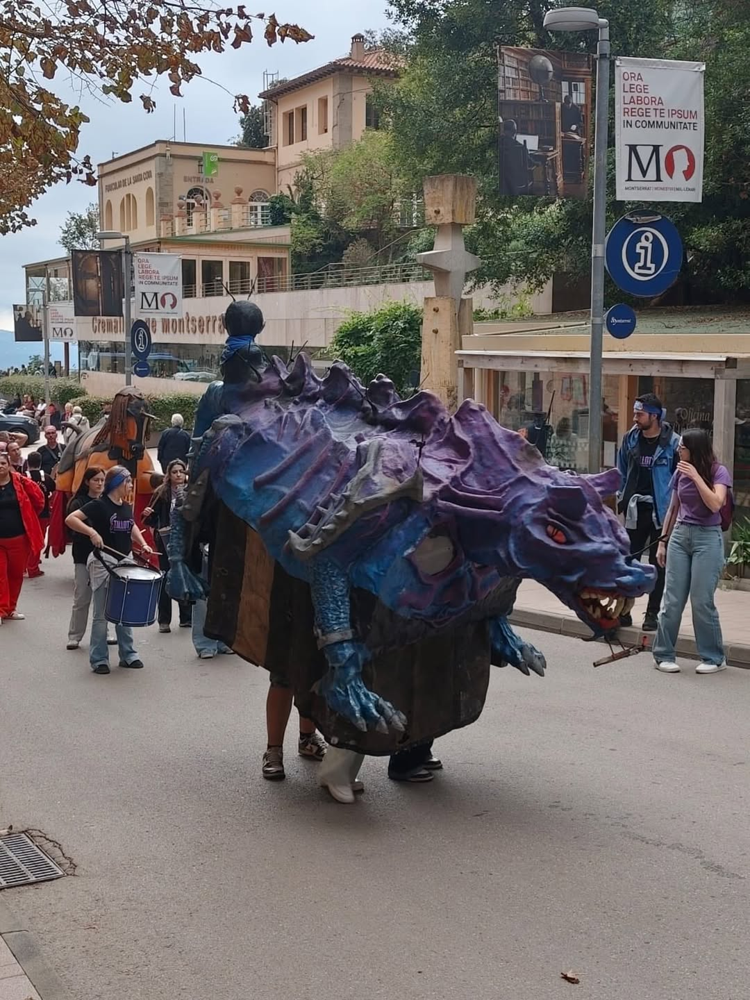
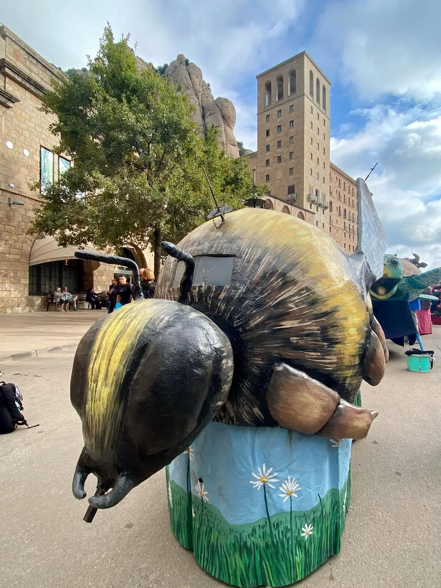

Entitats de Foc
El Vendrell compta amb un dels seguicis de foc més rics i variats de Catalunya. Aquí pots conèixer les 10 bèsties que omplen de llum i pólvora la nostra Festa Major.

El Bou de Foc
Bèstia recuperada que destaca per les seves potents enceses i el seu ball brau al mig de la plaça.

El Cabrot
Una figura imponent i diabòlica, reconeguda pel seu aspecte ferotge i la seva gran capacitat de foc.

El Caramot
La bèstia més gran del Vendrell, amb desenes de punts de foc que creen un espectacle visual inigualable.

Les Puces
Petites però constants, aquestes figures infantils i juvenils són el futur de la tradició del foc a la vila.

El Drac
El guardià tradicional de la festa, amb el seu disseny clàssic i el ball rítmic acompanyat dels tabalers.

La Mulassa
Coneguda per la seva agilitat i per les seves "coces" de foc que sorprenen a tothom durant el recorregut.

La Víbria
Figura femenina del bestiari amb trets de drac i pit de dona, que aporta elegància i força al seguici.

El Tallot
Una de les figures més singulars, amb un caràcter propi que el fa destacar en totes les cercaviles.

El Borinot
Bèstia voladora que simbolitza el brogit de la festa amb les seves rodes de foc ràpides i brillants.

La Tortuga
Malgrat el seu nom, és una figura sorprenent que tanca el seguici amb una presència majestuosa.